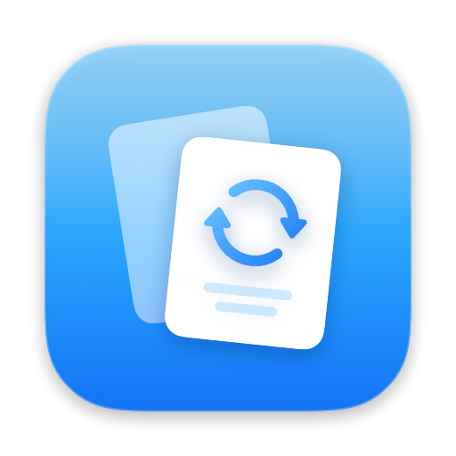

ConvertStop uploading your files to strangers.
Right-click a file in Finder, pick a format, done. No sketchy converter site, no queue, no “create an account to download”. It all happens on your Mac.
Every format your upload box keeps rejecting.
-
Interview.opus MP3, 320 kbps
Sound and video.
MP3, WAV, FLAC, HEVC, ProRes, WebM, GIF. Your Mac has a video chip that’s been bored for years. Now it has a job.
-
IMG_2041.heic JPEG, 85%
Photos that open everywhere.
HEIC is great until you send it to someone. JPEG, PNG, WebP and AVIF, shrunk to whatever the form allows.
-
Notes.md PDF, A4
Documents and PDFs.
Markdown to a PDF people can actually read. Word, RTF and HTML both ways. PDF pages to images, for when someone needs page 4 as a screenshot.
We all hate paying for software.
Convert
$0
per month, per year, per anything
- Every format on this page, no “Pro” tier
- No account, no trial, no upgrade popup
- MIT licence: fork it, ship it, sell it
- macOS 14 or later, Apple Silicon or Intel
- Audio and video use ffmpeg from Homebrew
- Not notarized, because Apple wants $99 a year for that. You click Open Anyway once.